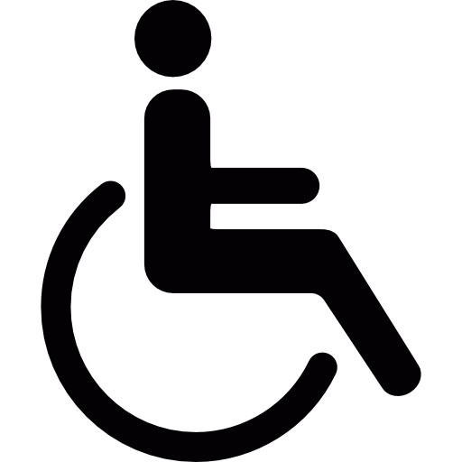

A Importância da Acessibilidade na Vida Cotidiana

A acessibilidade desempenha um papel fundamental na vida cotidiana de milhões de pessoas em todo o mundo.
Garantir que espaços públicos, privados e digitais sejam acessíveis não é apenas uma questão de direitos humanos,
mas também uma necessidade para uma sociedade inclusiva e equitativa. A acessibilidade beneficia não
apenas as pessoas com deficiência, mas também idosos, pais com carrinhos de bebê e muitos outros.
A acessibilidade na vida cotidiana abrange uma variedade de áreas, desde a infraestrutura das cidades
até a acessibilidade digital. Nas cidades, calçadas acessíveis, rampas em edifícios públicos e transportes
adaptados são essenciais para permitir que pessoas com mobilidade reduzida possam se locomover com facilidade.
Além disso, semáforos sonoros e sinais táteis auxiliam pessoas com deficiência visual a atravessar ruas com segurança.
No mundo digital, a acessibilidade é crucial para garantir que todos tenham acesso à informação e serviços online.
Isso inclui a criação de sites e aplicativos que sejam compatíveis com leitores de tela e outras tecnologias
assistivas. Essas medidas não apenas beneficiam as pessoas com deficiência, mas também melhoram a experiência de
todos os usuários.
Em resumo, a acessibilidade na vida cotidiana não é apenas um conceito, mas uma necessidade premente.
Ela promove a igualdade de oportunidades, melhora a qualidade de vida das pessoas com deficiência e contribui
para a construção de uma sociedade mais inclusiva.